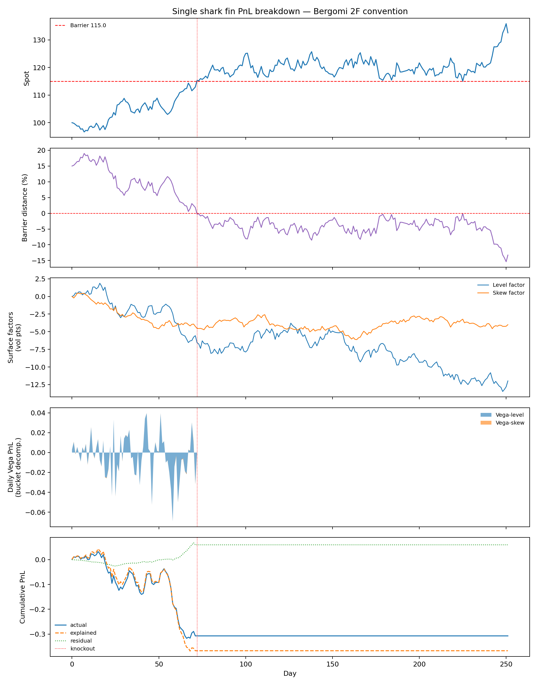
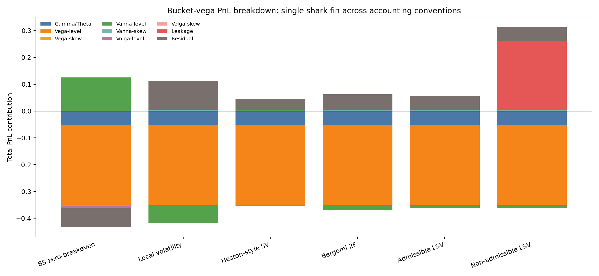
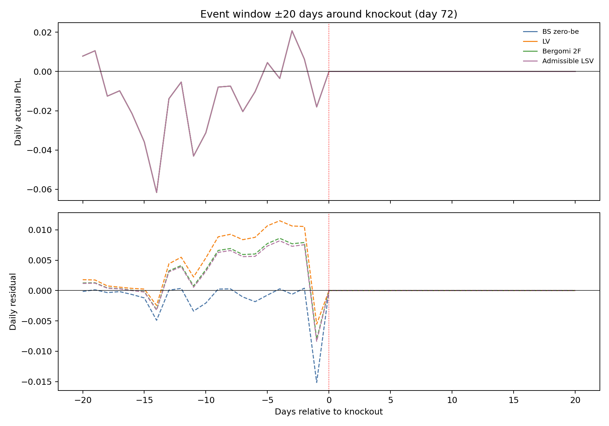
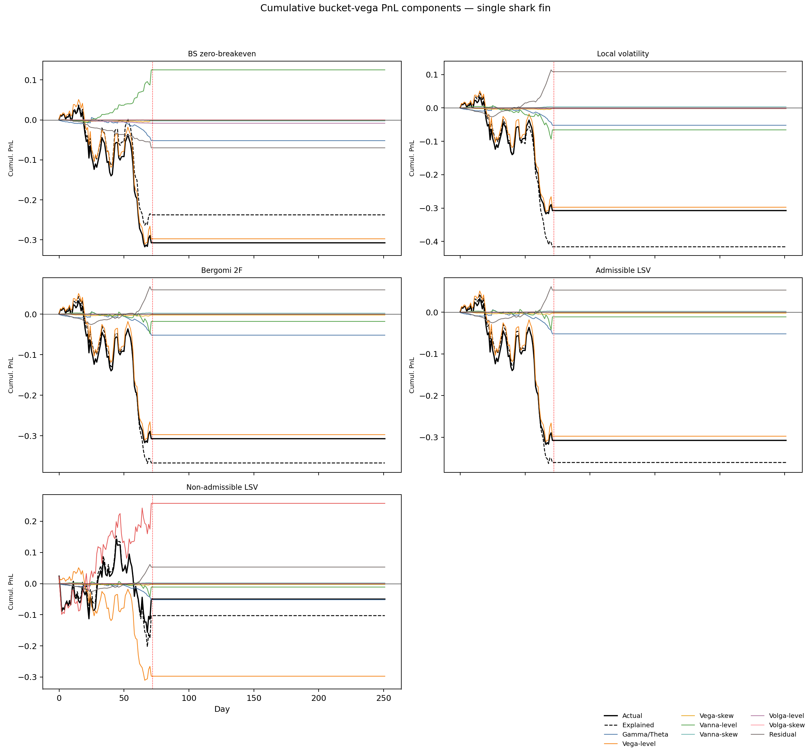
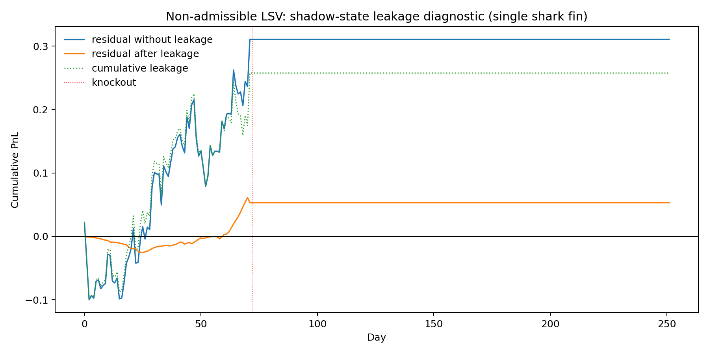

期权动态盈亏拆解（二）：基于鲨鱼鳍期权的仿真实验
摘要
单鲨鱼鳍（看涨型，含上敲出固定收益）与普通上敲出看涨的核心区别在于触障后的处理方式：后者价值归零，前者锁定固定票息 。这一区别使 PDE 在上障碍处给出非零 Dirichlet 边界，产品的有效 Vega 在接近障碍时方向可以翻转——波动率上升同时推高了触障概率（锁定低票息）和未敲出时的上涨参与价值，两者对价格的影响相互抵消，导致有效 Vega 绝对值小于普通上敲出看涨。
本实验用合成路径（第 72 个交易日触及上障碍 ）检验 Bergomi 动态 PnL 归因框架在单鲨鱼鳍上的适用性，重点考察三个问题：(1) PDE 定价能否给出正确的 Gamma/Theta、Bucket Vega/Vanna/Volga 分项；(2) 触障后的事件窗口 residual 是否低于普通 UOC；(3) 不同模型的 breakeven 口径如何通过 Vanna-level 分项改变残差。
数值结果：Bergomi 2F 口径下累计 actual PnL 为 −0.3074，explained PnL 为 −0.3673，residual 为 0.0599，日度解释率 。Vega-level 累计 −0.2974 是最大单项；模型间差异主要来自 Vanna-level（BS zero-breakeven 为 +0.1251，LV 为 −0.0657）。触障后事件窗口内最大单日 residual 为 0.0086，远低于普通 UOC，原因是 PDE 边界条件已将触障价值变化内化。
实验全部基于合成数据，不构成真实市场模型排序证据。
1. 研究问题
- 看涨单鲨鱼鳍的 PDE 边界条件（上障碍处锁定固定票息、下方保底）如何转化为比普通 UOC 更温和的触障 PnL 跳变？
- 在 PDE 定价框架下，Bucket Vega、Bucket Vanna、Bucket Volga 对日度 PnL 的解释比例有多高？最敏感的曲面格点集中在哪些 区域？
- LV、Heston-style SV、Bergomi 2F、admissible LSV 的 breakeven 设定如何通过 Vanna-level 分项改变累计 residual？
- Non-admissible LSV 的 shadow-state leakage 项量级与 admissible 版本的差距是多少？
2. 理论机制
2.1 产品收益结构
看涨单鲨鱼鳍收益部分（不含本金）定义为：
参数设定：，，，，，， 年。
与普通 UOC 的关键区别：普通上敲出看涨触障后价值归零，触障瞬间产生价值跳变 ；单鲨鱼鳍触障后锁定 ，触障瞬间的价值变化为 ，远小于前者。PDE 以非零 Dirichlet 边界条件捕捉这一差异，使触障事件窗口的 residual 不出现大幅跳跃。
2.2 PDE 定价与边界条件
设剩余期限 ，收益部分价格 满足一维 Black-Scholes PDE（）：
边界条件与初始条件：
上边界 是非零 Dirichlet 条件，对应敲出锁定。脚本（run_sharkfin_experiment.py）使用隐式 Euler 时间推进和 Thomas 三对角算法，空间格点 180，时间步数 。触障后产品收益锁定，，所有曲面 Greeks 清零。
有效波动率：PDE 以加权平均 作为输入。权重 在 strike 方向围绕 （ATM）和 （障碍），在 maturity 方向围绕当前剩余期限 ：
2.3 双因子 Mock 曲面
曲面由 level 因子 和 skew 因子 两个随机因子驱动：
路径生成方程（固定种子 20260614）：
参数：，，；，。
252 个交易日的实现统计量（路径基准，非市场数据）：
2.4 Bucket Vega：链式法则映射
实验设置 个曲面 bucket，行权价 ，到期 。
PDE 价格 通过 依赖各 bucket 的隐含波动率 ，链式法则给出各 bucket Greeks：
其中 、、 均由 PDE 有限差分估计（扰动步长 ，）。Volga 只保留 bucket 对角项 ，交叉项在本实验中忽略。
每个 bucket 的隐含波动率变化由两个随机因子驱动：
据此，每个 bucket 的 Vega PnL 可进一步拆分为 level 贡献和 skew 贡献。
计算食谱：
| 步骤 | 输入 | 公式 | 输出 |
|---|---|---|---|
| PDE 求解 | ， | 隐式 Euler | ，，， |
| effective Vega/Vanna/Volga | 扰动 | 有限差分 | ，， |
| bucket 映射 | 权重 ，因子载荷 | 链式法则 | ，， |
| PnL 分项 | Greeks + 路径增量 | 归因公式 | Bucket Vega/Vanna/Volga PnL |
2.5 PnL 归因公式
根据 Black-Scholes P&L 推导 和 隐含波动率变动的残余 P&L，Delta 对冲后的日度 PnL 分解为：
各分项定义：
直觉：Vega 项由当日实际曲面移动 决定，所有模型相同。Vanna 和 Volga 项取决于模型给出的 breakeven 协方差 ——这是不同模型 PnL 归因口径的根本差异所在，参见 局部波动率 Carry P&L。
2.6 各模型 Breakeven 口径
各模型对 的设定（固定口径，不随日期更新）：
| 模型 | leakage | ||||
|---|---|---|---|---|---|
| BS zero-breakeven | 0.0000 | 0.0000 | 0.0000 | 0.0000 | 0.0 |
| Local volatility | −0.0140 | 0.0049 | −0.0060 | 0.0014 | 0.0 |
| Heston-style SV | −0.0090 | 0.0045 | −0.0030 | 0.0008 | 0.0 |
| Bergomi 2F | −0.0105 | 0.0063 | −0.0050 | 0.0016 | 0.0 |
| Admissible LSV | −0.0100 | 0.0065 | −0.0048 | 0.0015 | 0.0 |
| Non-admissible LSV | −0.0100 | 0.0065 | −0.0048 | 0.0015 | 5.0 |
Bergomi 2F 和 admissible LSV 的 最接近 realized 值 −0.011385；LV 的 偏离更大。这一偏差方向在 Vanna-level 分项上直接体现（见 §4.2 结果分析）。
2.7 LSV Leakage
若模型价格对不可交易 shadow state 有非零敏感性（即非可容许 LSV），标准 Gamma/Theta + Bucket Vega/Vanna/Volga 分解之外会留下（见 LSV P&L 完整拆解）：
实验中 ，用于诊断不可交易状态变量对路径 PnL 的贡献量级。
3. 实验设计
运行方式：python run_sharkfin_experiment.py，固定种子 20260614。
3.1 产品与路径设定
| 设定项 | 值 |
|---|---|
| 名义本金 | 100 |
| 初始现货 | 100 |
| 上障碍 | 115（15% OTM） |
| 敲出收益率 | 2%（绝对值 2.0） |
| 保底收益率 | 0.5%（绝对值 0.5） |
| 上涨参与率 | 100% |
| 期限 | 1 年，252 个交易日 |
| 触障日 | 第 72 个交易日 |
3.2 四个实验模块
模块 A——PDE 基准验证：在单一模型（Bergomi 2F）口径下，逐日分解 actual PnL 为 Gamma/Theta、Bucket Vega、Bucket Vanna、Bucket Volga 和 residual，检验公式解释率是否超过 0.97。
模块 B——模型口径对比：用同一条路径，在六种 breakeven 口径下对比累计分项，重点观察 Vanna-level 分项的方向和量级随模型的变化。
检验假设：Vega-level 各模型相同；Vanna-level 的正负号取决于 与 realized 的相对大小——偏差方向相反时分项翻号。
模块 C——Bucket 分箱：对 Bergomi 2F 口径，统计每个 bucket 的累计绝对贡献，识别最敏感格点。
检验假设：障碍附近（）和产品期限（）附近的 bucket 应贡献最大。
模块 D——敲出事件窗口：以触障日为 ，展示 内的日度 actual PnL 和 residual，比较四种模型在事件窗口内的归因闭合程度。
检验假设：单鲨鱼鳍触障后 residual 应清零（PDE 边界条件使价值连续过渡），最大单日 residual 应远小于普通 UOC。
4. 实验结果
4.1 路径与 PDE 累计 PnL
图 1（sharkfin_pnl_dashboard_bergomi2f.png）回答的问题：Bergomi 2F 口径下，Bucket Vega 各分项加总是否能逐日跟踪 actual PnL，且触障后是否自然终止？

图中五个子图依次为：现货路径与障碍线（红虚线为 ，红点线标记触障日）、障碍距离 、双因子曲面路径（level 和 skew 因子）、日度 Vega-level/Vega-skew 堆叠、累计 actual/explained/residual。
触障前：Vega-level 日度分项多为负，累计 −0.2974。直觉：波动率上升同时提高了触障并锁定低票息的概率，压低了产品价值；由于单鲨鱼鳍触障后的收益（2.0）高于未敲出在当日 时的参与收益，Vega 的净方向为负。触障后：PDE 已将价值过渡到边界值 2.0，后续 Delta、Gamma 及曲面 Greeks 全部清零，所有分项在第 72 日后保持水平。
4.2 模型口径对比
表 1 展示六种口径对同一路径的期末分项加总。各列来源：actual 由 PDE 重估加 Delta 对冲头寸计算；Gamma/Theta、Bucket Vega/Vanna/Volga 各分项由 §2.5 公式加各模型 breakeven 参数计算；explained 为各分项之和；residual = actual − explained； 采用日度截面方差定义。
| 模型 | actual | explained | Gamma/Theta | Vega-level | Vega-skew | Vanna-level | Vanna-skew | Leakage | residual | |
|---|---|---|---|---|---|---|---|---|---|---|
| BS zero-breakeven | −0.3074 | −0.2375 | −0.0519 | −0.2974 | −0.0023 | +0.1251 | −0.0026 | 0.0000 | −0.0699 | 0.9887 |
| Local volatility | −0.3074 | −0.4158 | −0.0519 | −0.2974 | −0.0023 | −0.0657 | +0.0033 | 0.0000 | +0.1085 | 0.9657 |
| Heston-style SV | −0.3074 | −0.3512 | −0.0519 | −0.2974 | −0.0023 | +0.0024 | +0.0003 | 0.0000 | +0.0438 | 0.9807 |
| Bergomi 2F | −0.3074 | −0.3673 | −0.0519 | −0.2974 | −0.0023 | −0.0180 | +0.0023 | 0.0000 | +0.0599 | 0.9773 |
| Admissible LSV | −0.3074 | −0.3604 | −0.0519 | −0.2974 | −0.0023 | −0.0112 | +0.0021 | 0.0000 | +0.0530 | 0.9787 |
| Non-admissible LSV | −0.0499 | −0.1028 | −0.0519 | −0.2974 | −0.0023 | −0.0112 | +0.0021 | +0.2575 | +0.0530 | 0.9920 |
Vega 项相同、Vanna 项分化：六种模型的 Vega-level（−0.2974）和 Vega-skew（−0.0023）完全相同，因为这两项由实际路径 和 决定，与 breakeven 无关。差异集中在 Vanna-level：
- BS zero-breakeven（）：全部 realized spot-vol 协方差进入 Vanna surprise 项，Vanna-level = +0.1251，方向为正（即 realized 协方差比"零 breakeven"的预期更负，但符号为正是因为 本身为负——PnL 公式中 的符号需结合 Greek 方向判断）。
- LV（）：该值比 realized 偏负更多，过度纠偏导致 Vanna-level 翻转为 −0.0657，residual 最大（0.1085）。这与香草实验中 LV 口径残差反而最大的结论一致。
- Bergomi 2F / admissible LSV：breakeven 最接近 realized 统计量，Vanna-level 接近零，residual 相对最小。
- Non-admissible LSV：actual PnL 为 −0.0499（模型自身包含 leakage +0.2575），与外部观察者的 mock market PnL −0.3074 不同口径；model residual 0.0530 等于 admissible LSV，但 market residual 要用外生市场 PnL 重新计算。
图 2（sharkfin_model_waterfall.png）回答的问题：六种口径如何将同一条路径 PnL 在分项之间重新分配？

堆叠柱形图中，Vega-level 柱高在所有模型中相同；Vanna-level 柱的正负和高度随模型变化，是区分各模型归因的主要视觉特征。
4.3 Bucket 分箱：最敏感的曲面格点
表 2 展示 Bergomi 2F 口径下累计绝对贡献最大的五个 bucket（来自 sharkfin_bucket_daily.csv 的各 bucket 累计加总）。
| Bucket | 累计绝对贡献 | Vega-level | Vega-skew | Vanna-level | Vanna-skew | Volga-level |
|---|---|---|---|---|---|---|
| K110_T12M | 0.0459 | −0.0416 | −0.0017 | −0.0025 | +0.0001 | 0.0000 |
| K100_T12M | 0.0417 | −0.0384 | +0.0006 | −0.0023 | +0.0004 | 0.0000 |
| K110_T06M | 0.0388 | −0.0350 | −0.0016 | −0.0022 | +0.0001 | 0.0000 |
| K120_T12M | 0.0383 | −0.0330 | −0.0031 | −0.0020 | −0.0002 | 0.0000 |
| K100_T06M | 0.0354 | −0.0323 | +0.0007 | −0.0020 | +0.0004 | 0.0000 |
格点分布的含义：K110 和 K120 位于上障碍 115 附近，其隐含波动率直接影响触障概率——波动率上升使触达概率提高，压低未敲出上涨参与腿的期望价值，对应 Vega-level 为负。K100（ATM）格点则影响上涨参与腿本身的时间价值。Volga-level 全部接近零，说明本路径下 vol-of-vol surprise（ 与 的偏差）量级很小。
4.4 敲出事件窗口
图 3（sharkfin_event_window.png）回答的问题：触障前后 40 个交易日内，actual PnL 和 residual 如何分布？触障是否引发 residual 跳变？

触障前（）：actual PnL 多为负，反映现货接近障碍时产品价值持续压缩——触障概率升高、上涨参与腿时间价值降低。触障日（）：PnL 出现一次较大负值（持仓平仓）。触障后（）：actual PnL 和 residual 均清零，产品持仓已终止。
Bergomi 2F 口径下事件窗口内最大单日 residual 为 0.0086（第 68 个交易日）。与普通 UOC 的对比：普通 UOC 触障后价值从 几元跳变到零，事件窗口会出现较大 residual；单鲨鱼鳍触障后价值从 过渡到 ，差值较小，PDE 边界条件平滑了跳变，因此事件窗口 residual 保持在低量级。
4.5 累计分项时序与 Leakage 诊断
图 4（sharkfin_cumulative_components.png）回答的问题：各模型口径下，哪个分项在哪些时段主导累计 PnL？触障后各分项是否自然终止？

五个子图分别对应五种主要模型。每幅图中黑实线为 actual，黑虚线为 explained，彩色线为各分项。Vega-level 线（橙色）在各子图中重合，是最大贡献项；Vanna-level 线（绿色）在各模型间符号和斜率不同，是模型差异的主要来源。第 72 日后所有线保持水平。
图 5（sharkfin_lsv_leakage.png）回答的问题：非可容许 LSV 的 shadow-state leakage 贡献了多少 PnL，加入后 residual 如何变化？

蓝线（不含 leakage 的 standard residual）累计为 +0.3105，加入 leakage 项（+0.2575，虚线）后 residual（橙线）降至 +0.0530，与 admissible LSV 对齐。这说明 shadow state 在本路径上确实携带了大量路径 PnL；但 leakage sensitivity（）是外生设定值，不是从完整 LSV 模型校准得到，因此 0.0530 的剩余 residual 不代表模型真正的 accounting 精度。
5. 实验局限
本实验存在三项简化，需在解读结论时注意：
简化一（有效波动率近似）：PDE 使用单一 而非完整局部波动率面 。Bucket Greeks 通过链式法则从 effective-vol Greeks 映射得到，Volga 只保留 bucket 对角项，忽略跨 bucket 的二阶交叉项。在真实多维曲面动态下，这些交叉项会对 Volga PnL 有贡献。
简化二（固定 breakeven 口径）：六种模型的 在整个路径上固定不变，未每日从模型参数校准中内生导出。真实重校准中，breakeven 随曲面变化，残差中会包含参数漂移风险和模型误设风险（详见香草实验报告 §2.5 的讨论）。
简化三（离散观察与利率）：实验使用 和日度连续观察，忽略了实务中的离散观察日修正、利率贴现和买卖价差。
6. 结论
结论一（PDE 边界条件平滑触障跳变）：单鲨鱼鳍的非零上边界 使触障时价值过渡平缓，事件窗口 residual 最大单日仅 0.0086，远低于普通 UOC。触障后产品风险终止，所有分项自然归零。
结论二（Vega-level 是主导分项，集中在障碍附近格点）：累计 Vega-level −0.2974 占 actual PnL −0.3074 的绝大部分。Bucket 分箱显示，K110_T12M 和 K120_T12M（障碍附近）贡献最大，其次是 K100_T12M 和 K100_T06M（ATM）。这一分布反映了单鲨鱼鳍价值对上障碍触达概率的敏感性。
结论三（Vanna-level 是模型口径差异的核心）：LV 的 Vanna-level 为 −0.0657，residual 最大（0.1085），原因是 比 realized −0.0114 偏负更多，方向设反导致过度纠偏。Bergomi 2F 和 admissible LSV 的 breakeven 更接近 realized 统计量，residual 较小。这一结论与香草实验中"breakeven 偏差方向比绝对大小更关键"的观察一致。
结论四（Non-admissible LSV 的 leakage 量级显著）：加入 leakage 项后 standard residual 从 0.3105 降至 0.0530，说明 shadow state 在本路径上贡献了大量 PnL。但这一结论依赖外生的 设定，不代表从完整模型校准后的真实 leakage 量级。
实验能回答的问题：PDE 定价下单鲨鱼鳍的 PnL 归因机制；Bucket Vega 链式法则的数值实现；不同 breakeven 口径对 Vanna 分项的影响方向；触障对事件窗口 residual 的抑制效果。
实验不能回答的问题：真实市场中各模型的定价精度排序；完整曲面动态（随机 skew、随机 curvature 同时随机化）下的 PnL 归因；利率非零、离散观察日下的产品行为；真实对冲成本和 bid-ask 价差。